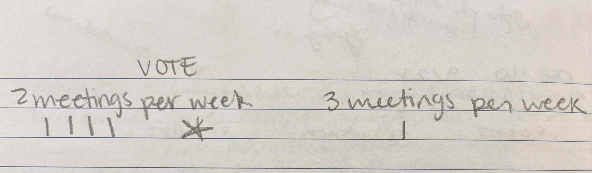

Mock 110 Meeting
Studygrouping
October, 1, 2021
Attendance List
- Reny
- Nicki
- Doja
- Kate
- Kali
Agenda:
This meeting will cover how to get started in this course and the logistics of forming this study group
Unfinished Business:
Check in with everyone to see if they commit to completing this course?
New Business:
Vote for if we have 2 or 3 meetings per week
Misc. Comments/Questions:
- Should we bring food to the upcoming meetings?
- Should we work individually or collaborate throughout the project?
- Everyone is busy on Sunday
The main takeaway from this meeting is teamwork and we will fail without it.
Meeting Materials
Work-Life Balance Diagram 
Number of Meetings: Voting Outcome 